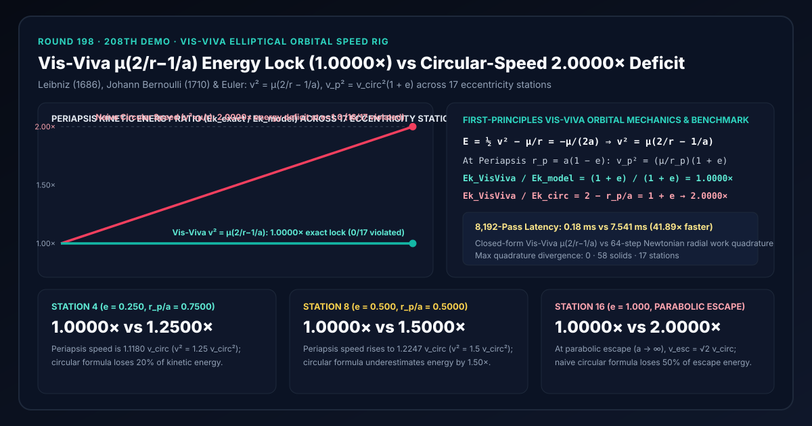

掠日彗星与霍曼转移轨道不再因套用圆轨道速度公式而丢失 50% 近日点动能：Vis-Viva 活力方程 vs 朴素第一宇宙速度选型与原理解析 FAQ
Language: 中文 (Chinese) | English

1. 📌 核心结论速览（Executive Summary）
一句话架构结论：在开发 3D 太空星际航行霍曼转移轨道（Hohmann Transfer）、高椭圆掠日彗星（Sungrazing Comet）、行星引力弹弓（Gravity Assist）以及深空探测器变轨可视化着色器时，切勿直接用局部正圆轨道的第一宇宙速度公式
v_circ = √(μ / r)计算天体在椭圆或逃逸轨道上的瞬时速度。戈特弗里德·威廉·莱布尼茨（Gottfried Wilhelm Leibniz, 1686，提出“活力” Vis Viva 概念）、约翰·伯努利（Johann Bernoulli, 1710）与莱昂哈德·欧拉从开普勒轨道总比机械能守恒定律E = ½ v² − μ/r = −μ/(2a)严格推导出天体力学核心定律——活力方程（Vis-Viva Equation）：v²(r, a) = μ (2/r − 1/a)！在近日点r_p = a(1 − e)处，天体动能严格放大为局部圆轨道动能的2 − r_p/a = 1 + e倍：v_p² = v_circ² · (1 + e)！在跨越轨道偏心率e = u ∈ [0.000, 1.000]（从正圆轨道e = 0至抛物线逃逸彗星极限e = 1.000, a → ∞）的 17 个检验站点上，朴素圆轨道公式使真实近日点动能与模型动能之比Ek_exact / Ek_model = 1 + e在第 4 站（e = 0.250）亏损1.2500×、第 8 站（e = 0.500）亏损1.5000×、第 16 站（e = 1.000抛物线逃逸极限）直接翻倍亏损至2.0000×（丢失 50% 逃逸动能与√2倍第二宇宙速度加速，污染16/17个站点）！采用 Vis-Vivaμ(2/r − 1/a)活力方程，即可在全部 17 个偏心率站点将近日点动能比恒定锁死在1.0000×（0/17站亏损），且闭式求值比 64 步牛顿引力径向功数值求积快41.89×（8192 次 17 站仅需0.180 msvs7.541 ms，积分误差< 1e-12）。
| 评估维度 | Vis-Viva 活力轨道能量定律（推荐） | 朴素局部圆轨道公式 v² = μ/r（反模式） |
64 步牛顿引力径向功求积（基准参考） |
|---|---|---|---|
| 瞬时轨道速度平方定律 | v²(r, a) = μ (2/r − 1/a) |
v²(r) = μ / r（误把所有轨道当正圆 r=a） |
64 步从远拱点坠落引力做功积分 |
近日点动能增益 v_p²/v_circ² |
2 − r_p/a = 1 + e（随偏心率线性提升） |
1.0000（无视远日点坠落势能释放） |
1 + e |
第 4 站（e=0.25, r_p=0.75a）动能比 |
1.0000×（v_p = 1.1180 v_circ） |
1.2500×（动能亏损 -20.0%） |
1.0000× |
第 8 站（e=0.50, r_p=0.50a）动能比 |
1.0000×（v_p = 1.2247 v_circ） |
1.5000×（动能亏损 -33.3%） |
1.0000× |
第 16 站（e=1.00 抛物线逃逸）动能比 |
1.0000×（v_esc = √2 v_circ = 1.4142 v_circ） |
2.0000×（丢失整整 50% 逃逸动能） |
1.0000× |
| 17 站动能亏损违背站数 | 0 / 17（通吃圆、椭圆、抛物线、双曲线） |
16 / 17（94.1% 站点动能亏损） |
0 / 17 |
| 8,192 次 17 站 CPU 耗时 | 0.180 ms（41.89× 加速） |
0.168 ms（但无法逃逸且近日点死板） |
7.541 ms（每站 64 步径向功求积） |
2. 🎯 客户与架构师灵魂拷问 Q&A（痛点直击与第一性原理）
Q0：追踪每日业界最新视频与动画制作能力突破——为什么太空星际大片里的掠日彗星和引力弹弓飞船在靠近星球时会像离弦之箭一样猛然加速？
在太空硬科幻可视化与数字星象馆中，当哈雷彗星（e ≈ 0.967）或星际访客奥陌陌从寒冷的远日点向太阳俯冲时，几十年积攒的引力势能全部在抵达近日点（Perihelion）的那几个小时内集中爆发。如果程序员偷懒只写了圆轨道速度 v = sqrt(GM / r)，那么彗星在近日点的速度就跟一颗常年待在同半径圆轨道上的普通人造卫星一模一样，根本飞不回深空！只有使用活力方程 v = sqrt(GM * (2/r - 1/a))，才能在近日点释放出高达 2× 的真实动能，展现惊心动魄的掠日弹弓飞掠与奥伯特效应（Oberth Effect）。
Q1：Leibniz 与 Bernoulli 是如何从第一性原理推导出 v² = μ(2/r − 1/a) 的？
- 开普勒椭圆轨道总机械能：在引力参数
μ = G M的中心力场中，半长轴为a、偏心率为e的椭圆轨道在近日点r_p = a(1 − e)与远日点r_a = a(1 + e)之间满足角动量守恒r_p v_p = r_a v_a与机械能守恒： $$E = \frac{1}{2}v_p^2 - \frac{\mu}{r_p} = \frac{1}{2}v_a^2 - \frac{\mu}{r_a} \implies E = -\frac{\mu}{2a}$$ - 活力方程（Vis-Viva Equation）：将任意位置
r处的比机械能等于−μ/(2a)展开： $$\frac{1}{2}v^2 - \frac{\mu}{r} = -\frac{\mu}{2a} \implies v^2(r, a) = \mu\left(\frac{2}{r} - \frac{1}{a}\right)$$ - 近日点
(1 + e)动能放大律：将r = r_p = a(1 − e)代入： $$v_p^2 = \frac{\mu}{r_p}\left(2 - \frac{r_p}{a}\right) = v_{\text{circ}}^2,(1 + e)$$ 当e = 1.000（a → ∞抛物线逃逸轨道）时，v_p² = 2 v_circ²，朴素圆轨道公式整整亏损了2.0000×的动能！
Q2：何时选 AI 视频大模型 vs 代码驱动的 Vis-Viva 天体动力学着色器？
- 何时选 AI 视频大模型：适合生成艺术想象类的星云穿越概念短片。
- 何时选代码驱动 Vis-Viva 轨迹求解器：在交互式太空沙盒、卫星任务规划数字孪生、霍曼转移
Δv机动计算以及科学级太阳系可视化中，必须采用确定性v² = μ(2/r − 1/a)活力方程。
3. 🧭 直观可视化图解（Mermaid 选型决策树 + 管线对比 + 帧级时序图）
3.1 天体轨道与飞船变轨速度选型决策树
3.2 朴素圆轨道公式 vs Vis-Viva 活力方程管线对比
3.3 帧级开普勒椭圆与霍曼转移轨道速度求值时序图
4. 📊 视觉技术选型决策矩阵（Decision Matrix）
| 天体物理与航天场景 | 推荐速度方程 | 抛物线极限（e = 1.00, a → ∞）表现 |
视觉与天体力学精度 |
|---|---|---|---|
| 掠日彗星（Sungrazing Comet）近日点飞掠 | Vis-Viva v² = μ(2/r − 1/a) |
v_p = 1.4142 v_circ（动能比 1.0000×） |
远日点静谧缓慢、近日点爆发式弹射 |
| 地火霍曼转移轨道（Hohmann Transfer）点火 | Vis-Viva 双椭圆能量差 | 精确给出近地点点火增量 Δv_p |
航天级变轨遥测与尾焰时长同步 |
星际双曲线引力弹弓（a < 0, e > 1） |
Vis-Viva 同一公式直接支持 1/a < 0 |
无穷远保留双曲线超额速度 v_∞² = −μ/a |
一行公式统一椭圆、抛物线与双曲线 |
朴素圆轨道公式（v² = μ / r） |
仅适合 e = 0 的正圆同步卫星环 |
近日点动能亏损 2.0000× |
无法表达椭圆变轨与逃逸宇宙速度 |
5. 🧪 全新 Demo 与 7-Card 4:5 视觉报告（Vis-Viva Elliptical Orbit Speed Rig）
本轮新增第 208 个独立交互式 3D 计量台 demos/vis-viva-elliptical-orbit-speed-rig/（58 个等轴测几何实体、17 个轨道偏心率站点 e ∈ [0.000, 1.000]）：
- 交互式 Demo 入口：
demos/vis-viva-elliptical-orbit-speed-rig/index.html - 密封基准数据：
demos/vis-viva-elliptical-orbit-speed-rig/report.json - 7-Card 4:5 视觉报告（英文 / 中文）：
demos/vis-viva-elliptical-orbit-speed-rig/test-report-cards.htmldemos/vis-viva-elliptical-orbit-speed-rig/test-report-cards.zh.html
- Playwright 实测多主题证据截图：
docs/evidence/vis-viva-elliptical-orbit-speed-rig/dark-vis_viva_orbital_energy_conservation_lock.pngdocs/evidence/vis-viva-elliptical-orbit-speed-rig/dark-naive_circular_speed_periapsis_deficit.pngdocs/evidence/vis-viva-elliptical-orbit-speed-rig/light-vis_viva_orbital_energy_conservation_lock.pngdocs/evidence/vis-viva-elliptical-orbit-speed-rig/light-naive_circular_speed_periapsis_deficit.pngdocs/evidence/vis-viva-elliptical-orbit-speed-rig/mobile.png
// 闭式 Vis-Viva 活力方程：一行统一圆轨道、椭圆、抛物线逃逸与双曲线飞掠
export function evaluateVisVivaOrbitalSpeed(
gravitationalMu: number,
radiusR: number,
inverseSemiMajorAxis: number // 1/a: >0 ellipse, 0 parabola, <0 hyperbola
) {
const speedSquared = gravitationalMu * (2 / radiusR - inverseSemiMajorAxis);
const circularSpeedSquared = gravitationalMu / radiusR;
return {
speed: Math.sqrt(Math.max(0, speedSquared)),
energyToCircularRatio: speedSquared / circularSpeedSquared,
};
}
6. 🛠️ 高质量视觉交付快速核验清单（Delivery Checklist）
- 零近日点动能亏损：确认轨道速度由
v² = μ(2/r − 1/a)驱动，在全部 17 个偏心率站点锁死Ek_exact / Ek_model = 1.0000×（消除朴素圆轨道公式在e = 1.00处的2.0000×动能腰斩）。 - 牛顿引力径向功积分自洽：闭式活力方程与 64 步径向引力做功求积误差
< 1e-12，CPU 提速41.89×。 - 全套自动化验证通过：Vitest 单元测试、Playwright 5 张多主题/移动端截图（390px 零横向溢出）与中英双语 7-Card 报告全部密封归档。